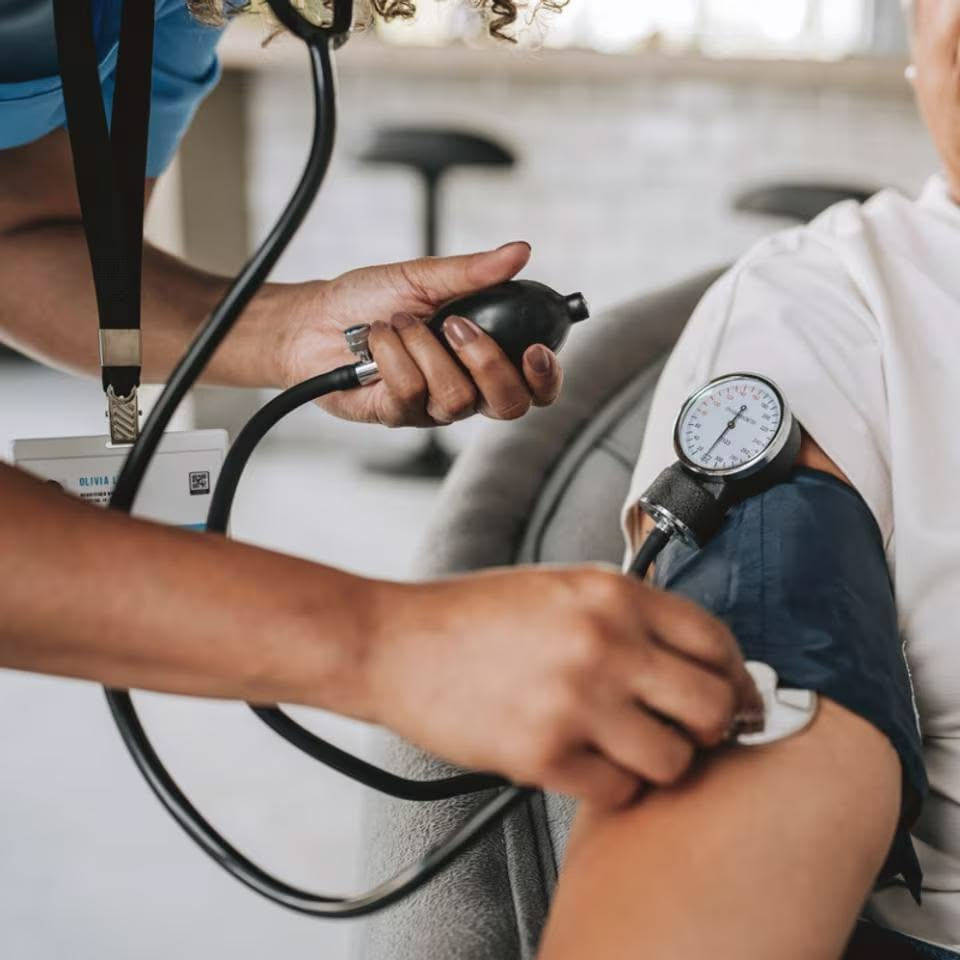
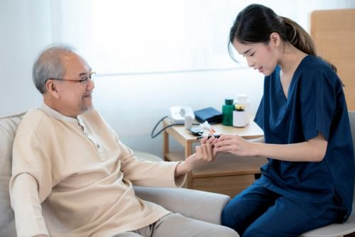

Choose
Pick the information or service topic you need.
Alagang may puso, kalusugang abot-kamay!
We help older adults and their families find clear, trustworthy health information and learn how online healthcare works, from the comfort of home. No technical skills needed: just read, tap and learn at your own pace.
Sources: World Health Organization (2025); National Center for Injury Prevention and Control (2026). Full references are listed under Health Education.
Our guides walk you through each step, so you always know what to expect.
Pick the information or service topic you need.
Gather your medicine list and write down your questions.
Find a quiet, well-lit place and check your device and connection.
Note your doctor’s advice and share it with family or caregivers.
To provide accessible, reliable, and understandable health information and telehealth support for senior citizens, helping them make informed decisions about their health and well-being.
To create a community where every older adult can access quality health information and digital healthcare support regardless of age or technological experience.

Large text, simple menus and short articles make health topics easy to read. Use the text size, dark mode and high contrast buttons at the top at any time; your choices are remembered. Information is written in plain language, so you can understand your health better, prepare questions for your doctor, and know what to expect from an online consultation. Caregivers can read along or share pages with the person they support.
Short, easy-to-read articles. Tap “Read More” to open each one.

High blood pressure (hypertension) usually has no signs or symptoms, so measuring your blood pressure is the only way to know if you have it (National Center for Chronic Disease Prevention and Health Promotion [NCCDPHP], 2026).
Hypertension means blood pressure stays too high. It can harm the heart, brain and kidneys (NCCDPHP, 2026), and it can burst or block arteries that supply the brain, causing a stroke (WHO, 2025).
Sources for this article: NCCDPHP (2026); WHO (2025). Full APA 7 citations are in the References list below.

Diabetes is a chronic condition in which the body cannot properly use insulin. Type 2 diabetes is linked to genetics and lifestyle factors such as being overweight or inactive (WHO, 2026), and it can be managed.
Sources for this article: NCCDPHP (2024); WHO (2026). Full APA 7 citations are in the References list below.

Diet plays a critical role in health and well-being, and unhealthy diets are a major risk factor for disease and disability (WHO, 2026).
Sources for this article: Castañeda (2024); WHO (2026). Full APA 7 citations are in the References list below.

Emotional wellness is as important as physical health. Loneliness and social isolation are key risk factors for mental health conditions in later life (WHO, 2025).
Sources for this article: NIMH (2024); WHO (2025). Full APA 7 citations are in the References list below.

Safe movement keeps muscles, bones and balance strong. Adults over 60 suffer the greatest number of fatal falls worldwide (WHO, 2021).
Sources for this article: NCIPC (2026); WHO (2021, 2024). Full APA 7 citations are in the References list below.
No. A smartphone or tablet with a camera and internet connection is usually enough. A family member or caregiver can help you set it up the first time.
No. This website gives general health information only. It does not replace a licensed healthcare professional. Please talk to a doctor about your own health.
Find a quiet, well-lit place, check your device and internet connection, and keep your medicine list and written questions ready.
Use the A+ button at the top of the page. You can also switch on dark mode or high contrast. The site remembers your choices.
Your information is handled securely and will only be used to respond to your inquiries or concerns It will not be shared with unauthorized individuals or used for purposes other than those stated.
Do not wait for an online reply. In the Philippines, dial 911 or go to the nearest hospital immediately.
Hotline: +63 000 123 4567
Email: agapay.telehealth@gmail.com
Address: Office Address, City, Philippines
In a real service: your name, email and the message you write in the contact form. This demo collects nothing.
Information would be used only to reply to your question and would not be sold or shared without your permission.
A real service would use secure connections, limited staff access and regular security reviews.
Do not share personal health details by ordinary email, social media or text. Give personal information only through properly secured and authorized healthcare services.